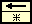
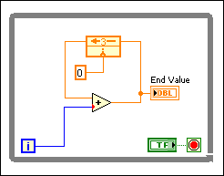
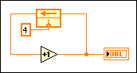
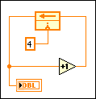

Open example�
Open example�
 Find related examples
Find related examples
Use a Feedback Node to store data from previous block diagram executions or loop iterations. The Feedback Node is useful in storing and retrieving state information from the previous execution.
A Feedback Node does not perform any action on the data it receives. Instead, it receives a value from the initializer terminal and transfers the value to the next input terminal. When a Feedback Node receives a new value, the node stores the value until the node passes that value to the next input terminal. A Feedback Node is analogous to a z-1 block in feedback control theory and digital signal processing.
A Feedback Node, shown as follows, automatically appears if you wire the output of a subVI, function, or group of subVIs and functions to the input of that same VI, function, or group and if you enable Auto-insert Feedback Node in cycles on the Block Diagram page in the Options dialog box. LabVIEW enables Auto-insert Feedback Node in cycles by default.

You also can manually select the Feedback Node on the Functions palette.
Refer to the Feedback Node - Building Array VI in the Structures\Feedback Node directory for examples of the Feedback Node.
Open example�
Find related examples
The initializer terminal sets the initial value of the Feedback Node. The appearance of the initializer terminal, shown as follows, changes depending on how you configure the Feedback Node.
Denotes that the Feedback Node initializes when the VI loads or compiles. Denotes that the Feedback Node initializes on the first call of the VI. Denotes that the Feedback Node initializes every time the loop executes.When you place a Feedback Node on the block diagram, the initializer terminal remains attached to the node and the node globally initializes each time the VI compiles or loads. The initial input of the Feedback Node for the first execution is the default value for the data type. However, you can set an initial value for the Feedback Node. If you set an initial value, the Feedback Node initializes to that value on the first call of the VI in an execution. Each time the VI runs after the first execution, the initial value is the last value from the previous execution. If you use the Feedback Node in a loop, you can move the initializer terminal to the left edge of the loop to configure the node to initialize every time the loop executes.
 |
Note�� (FPGA Module) When you initialize a Feedback Node inside a single-cycle Timed Loop, the output value is the same as the initial value until the enable terminal is TRUE. If the enable terminal remains FALSE for more than one cycle and the initial value changes from cycle to cycle, the output value also changes. |
Use the enable terminal, shown as follows, to enable or disable the Feedback Node.
You can display the enable terminal by right-clicking the Feedback Node and selecting Enable Terminal from the shortcut menu. If the enable terminal is set to TRUE, the Feedback Node runs as you configure it to run in the Properties dialog box or from the shortcut menu of the node. If the enable terminal is set to FALSE, the Feedback Node continues to output the last value from the previous execution or iteration until the value of the terminal is set to TRUE again.
By default, the Feedback Node stores data from only the previous execution or iteration. However, you can use the Configuration page of the Properties dialog box to configure the Feedback Node to store samples of data from multiple subsequent executions or iterations by increasing the number of executions or iterations to delay the output of the Feedback Node. If you increase Delay to more than one execution or iteration, the Feedback Node outputs only the initializer value until the delay you specify is complete. The Feedback Node then begins to output the values it stored one at a time and in subsequent order.
|
Note�� (FPGA Module) If you place a checkmark in the Ignore FPGA reset method checkbox on the FPGA Implementation page of the Properties dialog box, the LabVIEW FPGA Module removes the reset from the underlying register instantiations. This removal gives the compiler the option to implement the delays using shift register lookup tables (SRLs) instead of flip-flops. SRLs combine many delays into a single lookup table (LUT), which can reduce FPGA resource usage significantly compared to flip-flops. |
For example, if you specify a delay of 3, the Feedback Node outputs the initializer value for three loop iterations. On the next iteration, the Feedback Node outputs the value from the first iteration, which is iteration 0, and then the value from the second iteration, and so on. The following block diagram illustrates the behavior of a Feedback Node with an initial value of 0 and a delay of 3.

| Loop Iteration | Value the Feedback Node Outputs | End Value | Data the Feedback Node Stores |
|---|---|---|---|
| Before execution or iteration 0 | N/A | N/A | 0, 0, 0 |
| 0 | 0 | 0 | 0, 0, 0 |
| 1 | 0 | 1 | 0, 0, 1 |
| 2 | 0 | 2 | 0, 1, 2 |
| 3 | 0 | 3 | 1, 2, 3 |
| 4 | 1 | 5 | 2, 3, 5 |
| 5 | 2 | 7 | 3, 5, 7 |
| 6 | 3 | 9 | 5, 7, 9 |
| 7 | 5 | 12 | 7, 9, 12 |
In the previous block diagram, the Feedback Node outputs the initializer value, 0, three times before it outputs the first value it received, which was 0.
|
Note��When you set Delay to two or more executions or iterations, you can wire an array to the initializer terminal to initialize each delay element to an arbitrary value. |
You can change the arrow direction of a Feedback Node to indicate the flow of data along the wire by right-clicking the node and selecting Change Direction from the shortcut menu. Changing the arrow direction changes only the cosmetic appearance of the Feedback Node and the wires connected to it on the block diagram and does not change the direction of the flow of data.
You can change a Feedback Node to display in z-transform view by right-clicking the node and selecting Z-Transform View from the shortcut menu. This view changes the appearance of the Feedback Node to look like that of a z-1 block in feedback control theory and signal processing. Changing the node to z-transform view changes only the cosmetic appearance of the Feedback Node and does not change the functionality of the node.
Front panel indicators connected to the same cycle of wires as the Feedback Node display different values depending on their location on the wire relative to the Feedback Node. In the following block diagram, the Feedback Node passes the initial value to the next input node, which operates on the initial value and sends the final value to the indicator and back to the Feedback Node.

In the previous block diagram, the Increment function operates on the initial value of 4 before passing it to the indicator. Thus, the front panel indicator displays 5. However, in the following block diagram, the Feedback Node sends the same data value to the Increment function, but the indicator displays a different value.

In the previous block diagram, the Feedback Node initial value, 4, reaches the indicator before it reaches the Increment function. Although the final value sent to the Feedback Node from the Increment function is 5, the front panel indicator displays the initial value of 4.